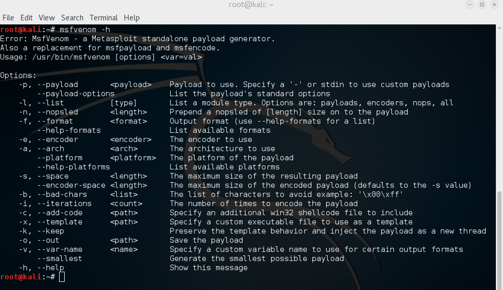
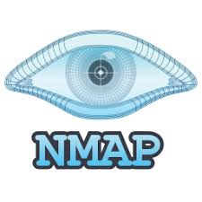
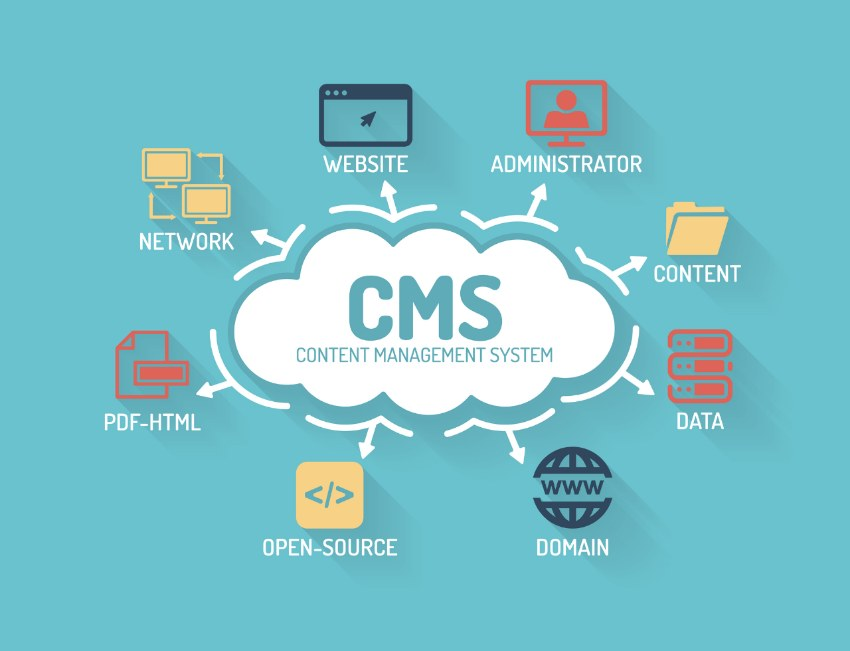
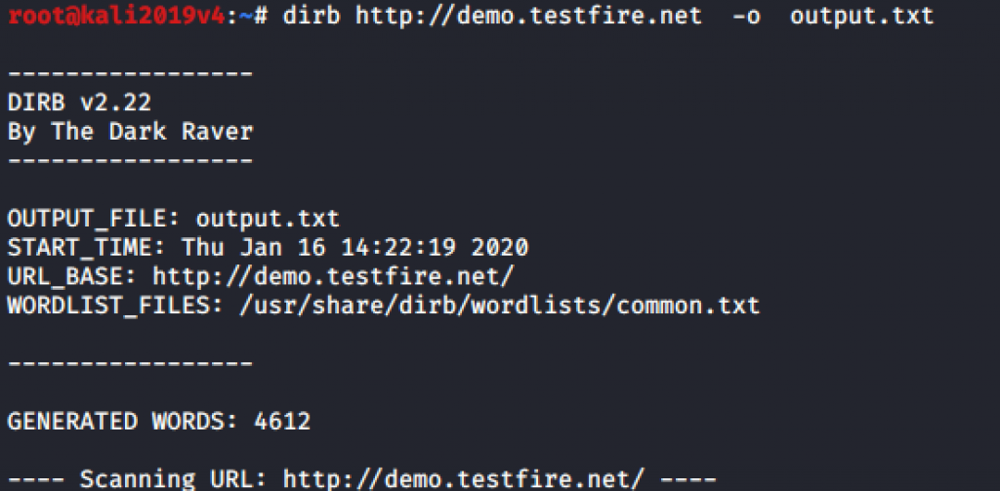
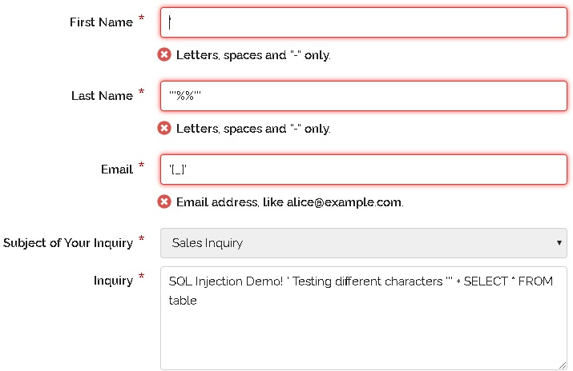
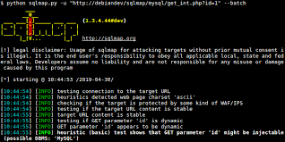
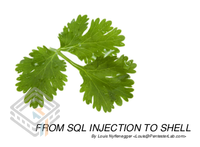
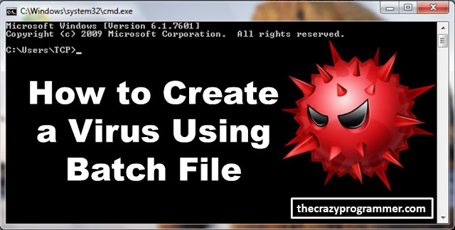
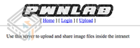

ENTHUSIASTIC RESEARCHER IN CYBER SECURITY , MACHINE
LEARNING , DEEP LEARNING EAGER FOR HARD
WORK, ATTENTION TO DETAIL AND
EXCELLENT COMMUNICATION SKILLS. CLEAR
UNDERSTANDING OF TOPIC . MOTIVATED TO
LEARN, GROW AND EXCEL IN ALL MY THREE
AREAS OF INTEREST.
IF YOU LIKE ENDORSE ME IN LINKEIN.

MSFvenom is a combination of Msfpayload and Msfencode, putting both of these tools into a single Framework instance. Want to learn Read full Post

Nmap is used to discover hosts and services on a computer network by sending packets and analyzing the responses. Nmap provides a number of features for probing computer networks, including host discovery and service and operating system>Interested to learn more Read full Post.

A content management system is a computer software used to manage the creation and modification of digital content. CMSs are typically used for enterprise content management and web content management Want To try yourself Read full post.

DIRB is a Web Content Scanner. It looks for existing (and/or hidden) Web Objects. It basically works by launching a dictionary based attack against a web server and analyzing the response Interested in see files of the website check full post.

SQL injection is a code injection technique that might destroy your database. SQL injection is one of the most common web hacking techniques. SQL injection is the placement of malicious code in SQL statements, via web page input.Want to try Check my post.

sqlmap is an open source penetration testing tool that automates the process of detecting and exploiting SQL injection flaws and taking over of database servers. Eager in doing Automatic sql injection check out in full post

This exercise explains how you can from a SQL injection gain access to the administration console. Then in the administration console, how you can run commands on the system.What to try sqlinjection in vulnerable machine check out my full post.
Phishing is the fraudulent attempt to obtain sensitive information or data, such as usernames, passwords and credit card details, by disguising oneself as a trustworthy entity in an electronic communication.Want to try out but only for practise👍 Read full post.

Burp Suite Professional is one of the most popular penetration testing and vulnerability finder tools, and is often used for checking web application security.Interested in trying Burp Check my full post.

A batch file is a script file in DOS, OS/2 and Microsoft Windows. It consists of a series of commands to be executed by the command-line interpreter, stored in a plain text file .Interested in creating in bat virsus. Check my full post.

Welcome to "PwnLab: init", my first Boot2Root virtual machine. Meant to be easy, I hope you enjoy it and maybe learn something. The purpose of this CTF is to get root and read de flag.Ready to get root acess stuck somewhere . Check my full post.
It is based on a real world scenario I faced while testing for a client's site. Dedicated to Aunty g0rmint who is fed up of this government (g0rmint).Stuck somewhere ChecK my full post.